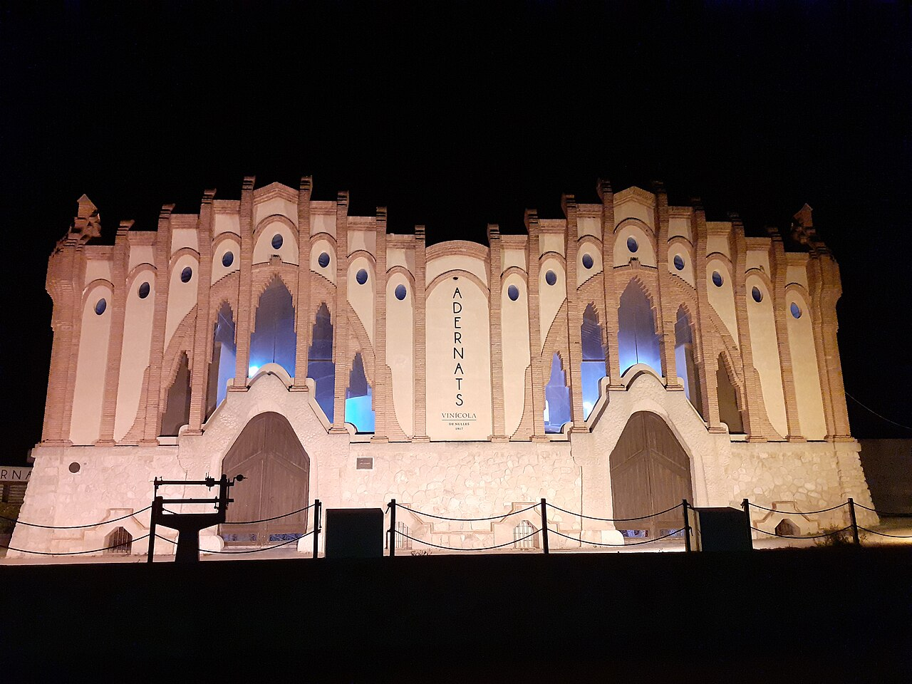
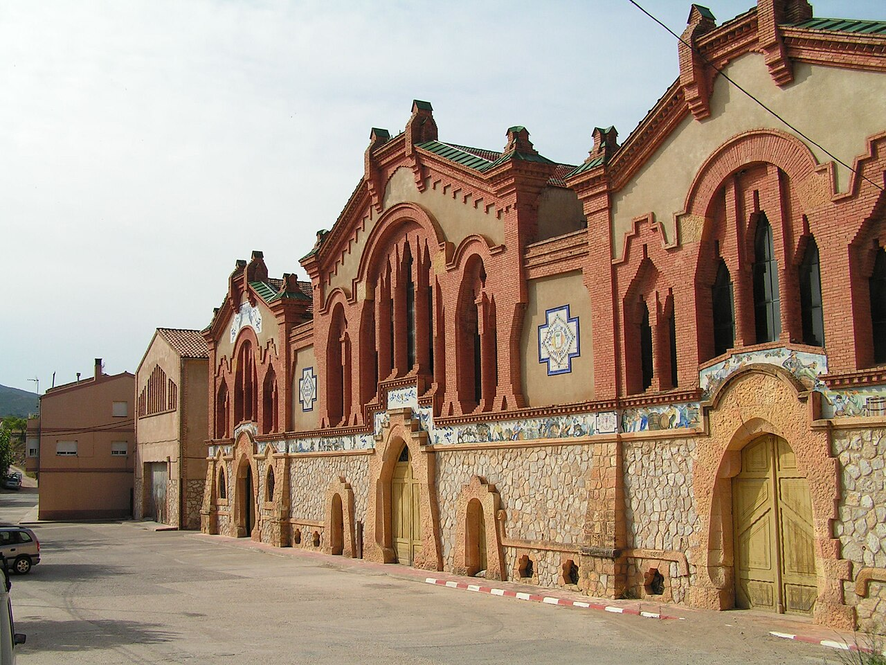
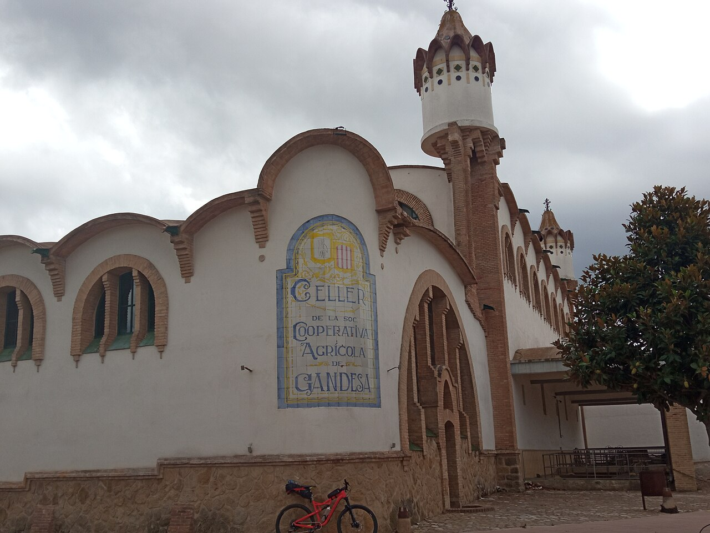
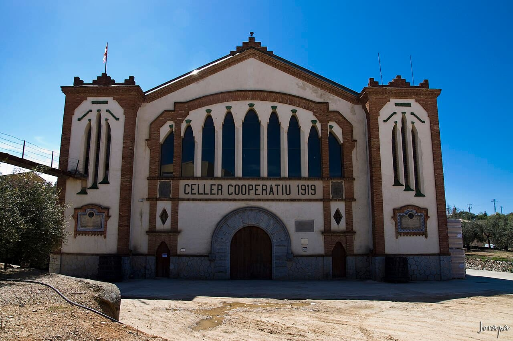
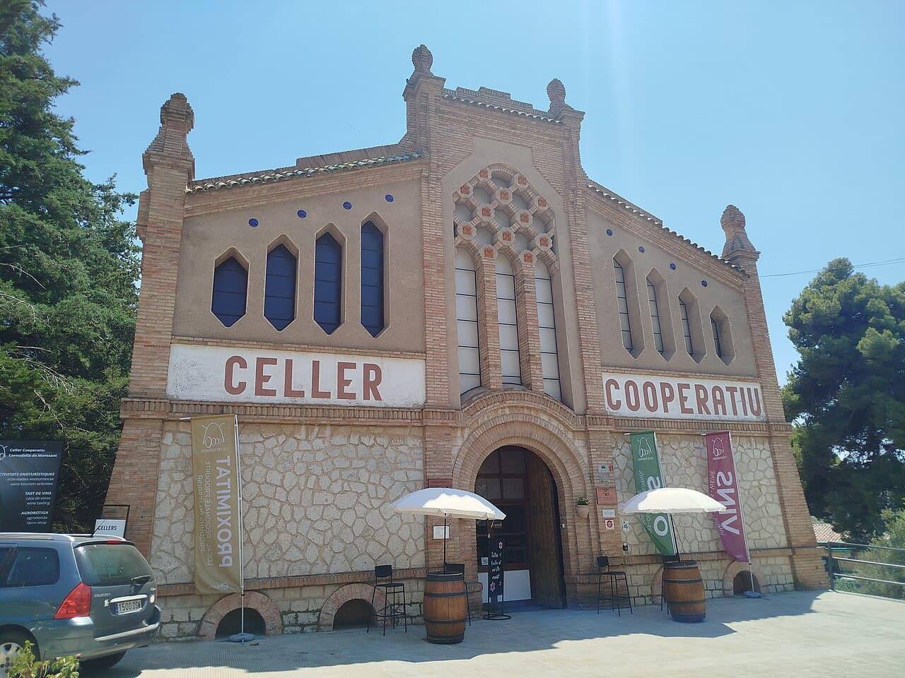
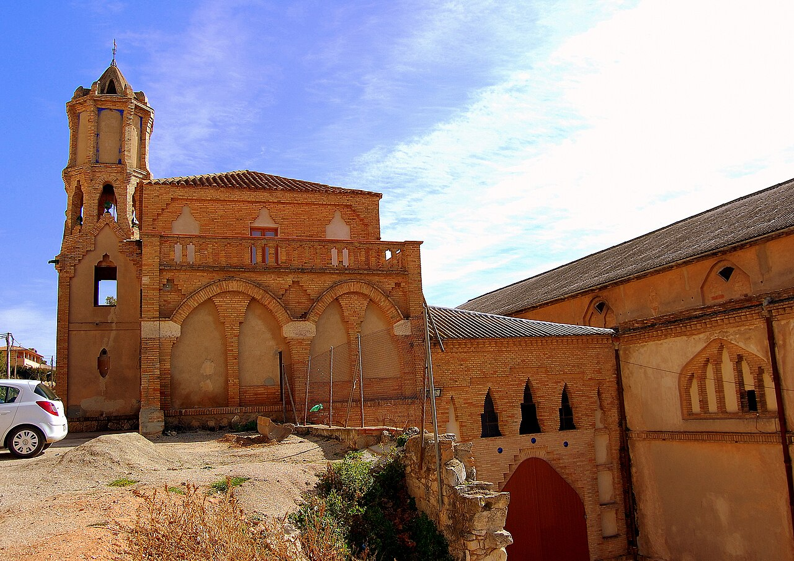
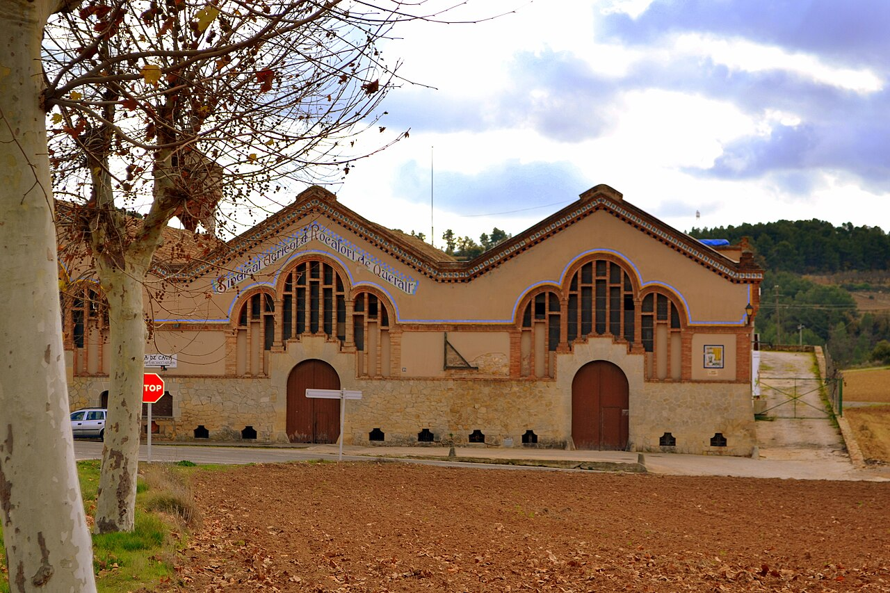

Se lo puso un dramaturgo
Quien entra por primera vez en el celler cooperativo del Pinell de Brai o en el de Nulles tarda unos segundos en entender qué está viendo. Hay naves altas, arcos que suben y se cierran en punta, luz que entra de lado. Parece una iglesia. Y sin embargo lo que se guardaba ahí dentro era vino, y quien pagaba las obras eran los payeses del pueblo.
El nombre con el que se conocen no es de un folleto turístico: fue Àngel Guimerà, el dramaturgo, quien definió uno de aquellos edificios como una catedral del vino. Se le quedó. Hoy se llaman así las dos docenas largas de cooperativas que levantó el mismo hombre: Cèsar Martinell.
El arquitectoUn hombre de Valls en el taller de Gaudí
Cèsar Martinell i Brunet nació en Valls en 1888 y murió en Barcelona en 1973. Se formó en el entorno de Antoni Gaudí, de quien se le considera uno de los últimos discípulos, y de él heredó dos obsesiones que se ven en cada uno de sus cellers: el arco parabólico, que aguanta mucho peso con poco material, y la idea de que la forma de un edificio debe salir de lo que ese edificio hace dentro.
Entre 1918 y 1923 proyectó y dirigió decenas de edificios para el cooperativismo agrario. No fue casualidad: eran los años en que los payeses se estaban asociando para dejar de depender del comprador de turno, y necesitaban dónde elaborar y guardar lo que hasta entonces vendían a granel. Martinell les dio edificios que funcionaban —ventilación, temperatura, circulación del producto— y que además eran hermosos. Lo segundo no se lo había pedido nadie.
Las siete protegidas, una por una







El friso que tardó treinta años
Si hay una historia que resume lo que eran estos edificios es la de la fachada del Pinell de Brai. El proyecto incluía un friso de cerámica vidriada del artista Francesc Xavier Nogués, con escenas de la vendimia y de la elaboración del vino y del aceite. Se eliminó del proyecto inicial: no había presupuesto.
El celler se levantó igualmente, en 1919, y funcionó durante décadas con la fachada incompleta. El friso no se colocó hasta 1949, treinta años después. Eso dice bastante más sobre aquellas cooperativas que cualquier adjetivo: gente que no tenía dinero ni para el adorno, pero que acabó poniéndolo igual, una generación más tarde.
Y nosotros tambiénBeber donde se hizo
Casi todas se pueden visitar, y la mayoría venden su vino allí mismo. Es de los pocos sitios donde el recorrido completo se entiende de un vistazo: la viña fuera, la nave dentro, la botella en el mostrador. Si te acercas a alguna, pregunta por el año de la cooperativa y no solo por el de la añada — suelen tener ganas de contarlo.
Y hay una coincidencia que a nosotros nos hace gracia: Martinell era de Valls, la misma villa de la calçotada. Un pueblo que ha dado al país dos cosas que no se parecen en nada y que se disfrutan igual de bien: una cebolla a la brasa y un puñado de catedrales.
Fuentes: Patrimoni Cultural de la Generalitat de Catalunya (ficha del celler cooperatiu del Pinell de Brai), Arquitectura Catalana, y la documentación sobre los cellers cooperatius modernistes. Imágenes, todas vía Wikimedia Commons: Pepito2711 y Jordi Gili (Nulles), Manel Zaera (el Pinell de Brai), Josepgesti (Gandesa), jorapa (Falset), Ibai1984 (Cornudella) y Angela Llop (Barberà y Rocafort), con licencias CC BY 4.0, CC BY-SA 2.0 y CC BY-SA 4.0 según el caso.